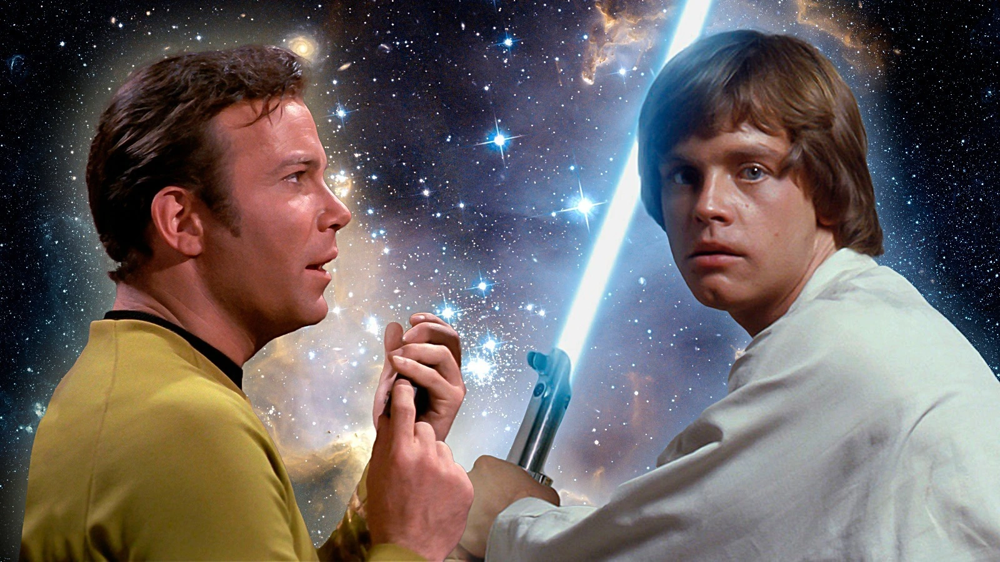

Star Trek vs. Star Wars: Quem Tem a Melhor Utopia?

A rivalidade entre Star Trek e Star Wars é uma das mais clássicas da cultura pop, dividindo fãs entre naves de exploração e sabres de luz. Mas, além das batalhas e dos personagens icônicos, esses universos apresentam visões de futuro radicalmente opostas. A pergunta que fica é: qual das duas franquias oferece a melhor utopia para a humanidade?
De um lado, a sociedade de Star Trek, uma visão otimista onde a ciência erradicou a pobreza e a humanidade busca o conhecimento em paz. Do outro, a galáxia de Star Wars, um cenário de conflito eterno, onde a luta entre o bem e o mal é constante e a esperança é forjada no caos. A escolha entre eles é, no fundo, uma escolha filosófica.
Neste artigo, vamos analisar a fundo a utopia (ou a falta dela) em cada uma dessas sagas. Vamos comparar suas políticas, tecnologias e qualidades de vida para responder à pergunta definitiva: em qual desses futuros você realmente gostaria de viver?
O que é uma utopia?
Antes de comparar os dois mundos, precisamos entender o que é uma utopia. Basicamente, é uma visão idealizada de sociedade um mundo onde tudo (ou quase tudo) funciona perfeitamente. Justiça, igualdade, paz, desenvolvimento tecnológico e bem-estar para todos são elementos comuns numa utopia.
Dito isso… vamos ao duelo!
Star Trek: A Utopia da Razão e Cooperação
Star Trek se passa centenas de anos no futuro, quando a Terra já não tem problemas como fome, pobreza ou guerras internas. A humanidade se uniu para formar a Federação dos Planetas Unidos, uma espécie de ONU intergaláctica, focada em ciência, exploração e cooperação com outras espécies.
Por que a utopia de Star Trek atrai?
- Fim do dinheiro: as necessidades básicas são supridas para todos, graças à tecnologia de replicadores. Ninguém precisa trabalhar por sobrevivência.
- Ciência acima da guerra: a grande missão da nave Enterprise, por exemplo, é “explorar novos mundos, procurar novas formas de vida e novas civilizações”.
- Diversidade cultural: muitas das tripulações são compostas por membros de planetas e raças diferentes, promovendo a inclusão.
- Progresso social: coisas como racismo, machismo e homofobia praticamente deixaram de existir.
Ou seja, Star Trek aposta na ideia de que, apesar de todos os nossos problemas atuais, a humanidade pode evoluir e construir um futuro em que o conhecimento, a empatia e a colaboração são os pilares da sociedade.
+ Leia mais: 7 tecnologias do Star Trek que viraram realidade
Mas nem tudo são flores…
É claro que existe conflito em Star Trek. Inimigos como os Klingons ou os Borgs ameaçam a paz da federação, mas as histórias quase sempre tratam o conflito com uma abordagem ética, questionando quais decisões são moralmente corretas num cenário tão avançado.
Esse universo coloca mais ênfase em filosofia, debate e evolução moral do que em batalhas épicas (apesar de elas também aparecerem de vez em quando).
Star Wars: A Luta Eterna Pela Esperança
Diferente de seu rival, a sociedade de Star Wars é marcada por um conflito perpétuo, onde a esperança é a principal moeda. Star Wars é definitivamente mais caótico. O enredo se passa em uma galáxia distante, muito tempo atrás onde impérios galácticos surgem, jedis lutam com sabres de luz e rebeldes enfrentam opressores.
Apesar de muita ação e uma estética visual apaixonante, o universo de Star Wars está longe de ser uma utopia…
Por que o universo de Star Wars encanta?
- Heróis épicos: é o clássico bem contra o mal, onde personagens como Luke Skywalker, Leia e Han Solo lutam por justiça.
- Fascínio pelo desconhecido: planetas exóticos, criaturas estranhas, ordens místicas… tudo parece tirado de um conto de fadas espacial.
- Força e destino: a ideia de uma energia mística que conecta todos os seres vivos seduz qualquer fã de espiritualidade ou fantasia.
Star Wars cativa muito pelo emocional. Os personagens sofrem, têm dilemas éticos pesados e enfrentam decisões que mexem com o destino da galáxia inteira.
Star Wars é uma Utopia? A Realidade da Galáxia
Na real, não é uma utopia. O universo de Star Wars é cheio de autoritarismo, desigualdade e sofrimento. A política é instável, a opressão é constante, e guerras são praticamente intermináveis. Ainda assim, há momentos de esperança e reconstrução como quando a Nova República surge após a queda do Império.
Muitos fãs gostam dessa abordagem mais “realista” e cheia de altos e baixos. Mas convenhamos: viver lá não seria nada tranquilo.
+ Leia mais: A ética dos clones em Star Wars: são soldados ou escravos?
O Duelo das Utopias: Star Trek vs. Star Wars, Ponto a Ponto

Então, qual universo traz a melhor futuro?
Para decidir qual franquia tem a melhor utopia, vamos comparar diretamente a sociedade de Star Trek com a de Star Wars. Alguns pontos-chave:
- Qualidade de vida: Star Trek, com certeza. Fome e guerra são coisas do passado.
- Tecnologia em prol do bem: Star Trek usa a ciência pra melhorar vidas. Em Star Wars, a tecnologia parece mais voltada pra destruição.
- Religião e misticismo: Star Wars tem a Força, que carrega uma vibe espiritual poderosa. Star Trek aposta na razão e na ética científica.
- Sistema político: A federação de Star Trek é estável e democrática. Star Wars vive de impérios tirânicos e rebeliões.
Pegando nosso contexto aqui no Brasil, se estamos cansado de filas em hospitais, corrupção, desigualdade e violência, talvez a ideia de uma sociedade baseada em ciência e justiça social (mesmo que fictícia) como a de Star Trek seja muito mais atraente.
Mas, se você curte histórias emocionantes, onde o bem precisa lutar com unhas e dentes para vencer o mal, Star Wars pode ser sua escolha. É aquele drama que te prende do início ao fim, com personagens falhos e decisões difíceis.
Qual Utopia Você Escolheria?
No final das contas, tudo vai depender do que você valoriza mais. Quer viver em um futuro pacífico, racional e próspero? Vai de Star Trek. Prefere uma aventura épica cheia de drama e emoção? Star Wars é seu lar.
Mas fica a pergunta: será que a humanidade tem mesmo mais chance de construir uma federação intergaláctica colaborativa ou estamos mais próximos de cair num império tirano com sabres de luz?
O futuro está em nossas mãos
Ficção científica serve não só pra entreter, mas também pra nos fazer refletir sobre o presente. Star Trek nos inspira a evoluir como civilização, enquanto Star Wars nos mostra que a luta por justiça é eterna.
Independentemente do universo que você prefere, ambos nos ensinam que o futuro não é apenas uma questão de tecnologia é sobre as escolhas que fazemos hoje.
Quer saber mais?
E você, em qual universo escolheria viver? Conta pra gente nos comentários!
Leia Também
- Como seria a internet na Terra-Média
- Como Duna moldou o universo de Star Wars
- Se o Chapéu Seletor fosse um algoritmo, como ele classificaria você?
- A biologia do Alien Xenomorfo
- O medo do invisível
Sharing is caring!